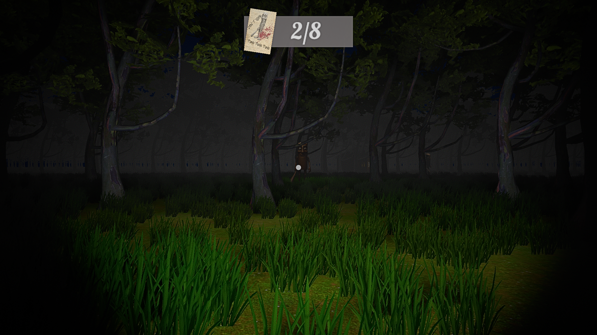
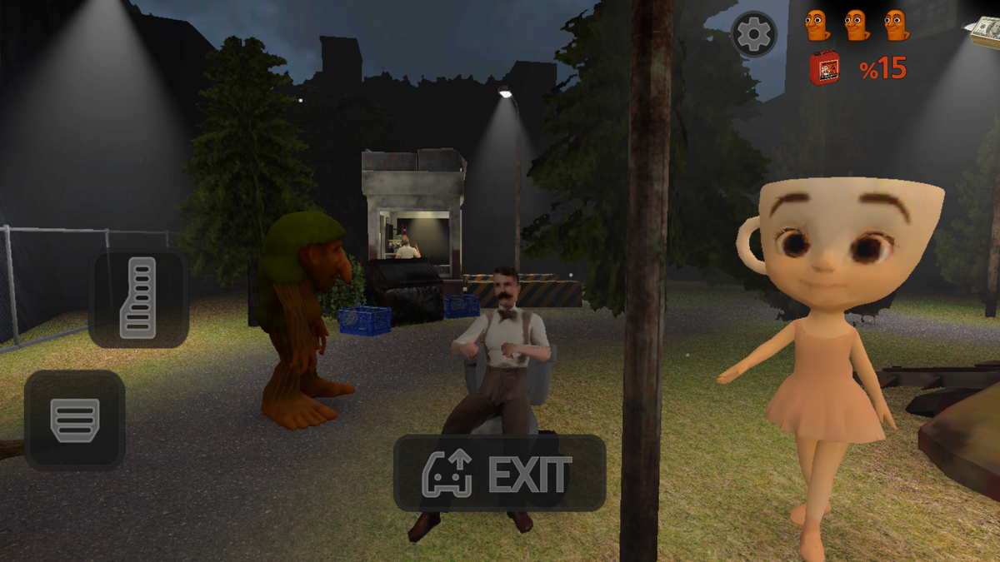
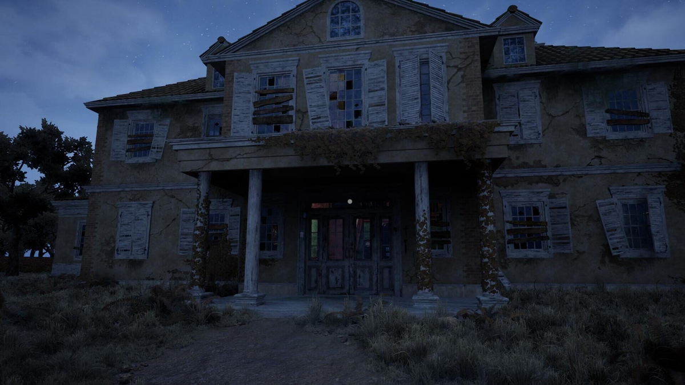

The Four Core Zones
Every run starts in the Dark Forest. To reach the Golden Statue, you must survive all four zones. Each one has a distinct layout, a different patrol pattern, and a unique hazard.

Starting Zone🌲 Dark Forest
The first area you unlock. Dense trees, narrow dirt paths, and a wooden figure who walks a fixed loop. You learn the basic patrol rhythm here — watch one full cycle, then move. Most new players get caught in the first 90 seconds because they sprint across an open clearing. Don't be most players.
Full Dark Forest guide → Fog Zone
Fog Zone
🪦 Graveyard
Fog drops your vision to a few meters. The wooden figure moves noticeably faster here. But the bone charm is buried somewhere in the graves — and it reveals buried treasure through walls. The trade-off is real: better loot, worse visibility. Your metal detector becomes more important than your eyes.
Full Graveyard guide →
Chase Zone🏚️ Abandoned Village
Nothing moves here until it does. The church bell rings once, then you have about 30 seconds before the patrol redirects toward the sound. You cannot stop the bell. You can only plan your exit before you trigger it. The village holds the key to the Golden Statue's location — but only if you survive the bell.
Full Village guide →
Endgame Zone🏰 Cursed Mansion
The final area. Narrow corridors, locked doors, and the wooden figure at full speed. The Cursed Mansion is where the Golden Statue's true location is revealed. There are no wide paths to escape through. Every wrong turn is a dead end. Only 12% of players reach this zone in a single run.
Full Mansion guide →How Locations Change the Game
Each zone modifies three core systems: patrol speed, visibility, and escape options. Understanding these differences is the difference between reaching the Mansion and restarting in the Forest.
Patrol Speed
The wooden character walks a fixed loop in every zone. In the Dark Forest, the loop takes about 40 seconds to complete. In the Graveyard, that drops to 25 seconds. In the Mansion, it's closer to 15. The faster the loop, the less time you have to move between cover.
Visibility Range
Clear skies in the Dark Forest give you roughly 20 meters of useful vision. Graveyard fog cuts that to 8. The Village has normal visibility but narrow sight lines between houses. The Mansion has flickering lamps and dark corners — you see less than you think you do.
Escape Routes
The Dark Forest has wide paths and multiple exits. The Graveyard has open gates but fog hides them. The Village has alleys and doorways — but the bell draws the patrol toward the church. The Mansion has one main exit, and it's usually behind you.
Zone Comparison at a Glance
| Zone | Patrol Loop | Visibility | Key Hazard | Unique Item |
|---|---|---|---|---|
| 🌲 Dark Forest | ~40 seconds | ~20 meters | Open clearings | Three bread ingredients |
| 🪦 Graveyard | ~25 seconds | ~8 meters | Fog + fast patrol | Bone charm |
| 🏚️ Abandoned Village | ~20 seconds | ~15 meters | Church bell alert | Statue location clue |
| 🏰 Cursed Mansion | ~15 seconds | ~10 meters | Dead-end corridors | Golden Statue |
Zone-Specific Tips
Three things that work in every zone, and one thing that only works in the Mansion.
Watch One Full Loop
In every zone, the first thing you should do is find cover and watch the patrol complete one full cycle. In the Dark Forest, that takes 40 seconds. In the Mansion, 15. Either way, it's the fastest way to learn the rhythm before you move.
Save Pulses for the Mansion
The Golden Statue only appears on the metal detector in the final minutes. If you emptied all 40 pulses in the Dark Forest, you'll be digging blind in the Mansion. Pace your scans across all four zones. At least 10 pulses should remain when you enter the final area.
In the Mansion: Doors Are Traps
Every locked door in the Cursed Mansion makes noise when opened. That noise pulls the patrol toward you. If you have to open a door, open it, move through, and immediately find cover on the other side. Never linger in a doorway.
Disclaimer: This is an unofficial fan site. Tung Tung Tung Sahur and all related characters, names, and game content are the property of their respective creators and studios. This site is not affiliated with, endorsed by, or sponsored by any of them. All trademarks and copyrights belong to their owners.